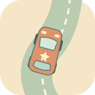

على مهلنا… نصل ونفرح
مضمار البستان
توقف متى أحببت. الطريق ينتظرك.

توقف متى أحببت. الطريق ينتظرك.
ابدأ بزر واحد للصغير. السيارة تتبع انحناء الطريق وحدها؛ نختار المسار عند الاستعداد. المخروط يوقف السيارة تلقائيًا دون اصطدام، ثم نختار طريقًا مفتوحًا وننطلق. الرايات اختيارية، ولا ترتيب للأطفال. لكل لاعب ثلاثة مضامير؛ الشريك ضيف على الجهاز نفسه. إيقاف حركة الطريق يعرض المضمار كاملًا والسيارة تتقدم عليه بهدوء. الفتح يستعيد السيارة متوقفة.